MoBi FS5 Python Course WS 23/24
Feedback participants: 4
Supervisors: Kerem, Janis, Ran, Renpeng, Leonid
How was your impression of the course organization? (first + second week)
Options: Very good, Good, Undecided, Bad, Very bad
Datacamp
Datacamp
Have you received enough support during the first week?
Options: Very good, Good, Undecided, Bad, Very bad
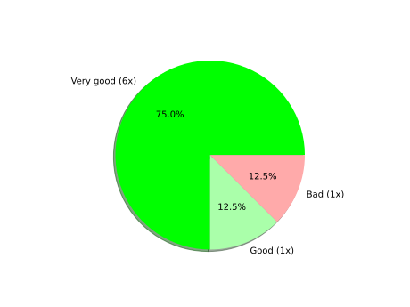Datacamp
During the first week, have you mostly worked alone or in groups?
Datacamp
Do you have any general criticism or suggestions regarding the organization or the content of the first week?
2 answer(s)
- I really liked the datacampcourse! It wasnt too long and really motivating
- I found the Datacamp courses really good.
Week 2 in General
Week 2 in General
Have you received enough support during the second week?
Options: Enough support, Mostly enough, Undecided, Mostly insufficient, Insufficient support
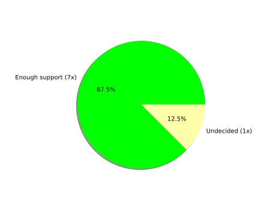Week 2 in General
During the second week, have you mostly worked alone or in groups?
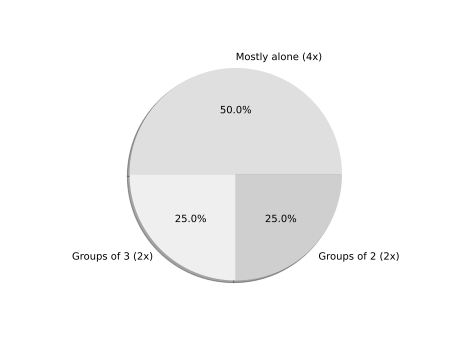Week 2 in General
For you personally, what was the greatest challenge during the second week? For example, were there any specific problems which you ran into very often?
3 answer(s)
- First day was a bit rough getting used to the image analysis but then it got better and fun
Week 2 in General
For you personally, what was the greatest challenge during the second week? For example, were there any specific problems which you ran into very often?
3 answer(s)
- Myself…
- Mostly just small errors, which took long to identify
Lab Session 1
Lab Session 1
In your opinion, how interesting/relevant was Lab Session 1?
Options: Very interesting, Interesting, Undecided, Irrelevant, Very irrelevant

Lab Session 1
How difficult was Task 1? (Intensity thresholding and Dice coefficient)
Options: Too easy, Easy, About right, Difficult, Too difficult
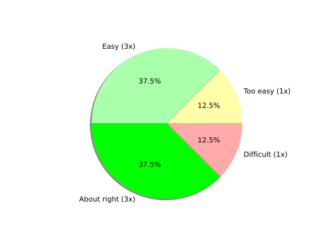Lab Session 1
Please only answer this question if you tried the Bonus Task 2 (Sobel filter). How difficult was it?
Options: Too easy, Easy, About right, Difficult, Too difficult
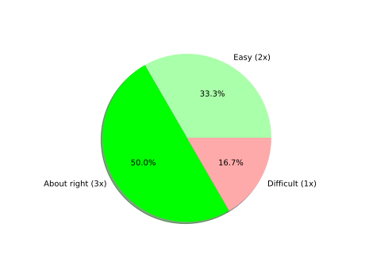Lab Session 2
Lab Session 2
In your opinion, how interesting/relevant was Lab Session 2?
Options: Very interesting, Interesting, Undecided, Irrelevant, Very irrelevant
Lab Session 2
How difficult was Task 1? (Otsu thresholding)
Options: Too easy, Easy, About right, Difficult, Too difficult
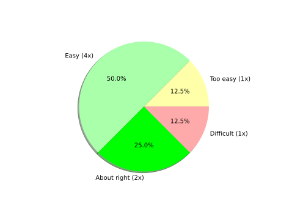Lab Session 2
How difficult was Task 2? (Batch processing)
Options: Too easy, Easy, About right, Difficult, Too difficult
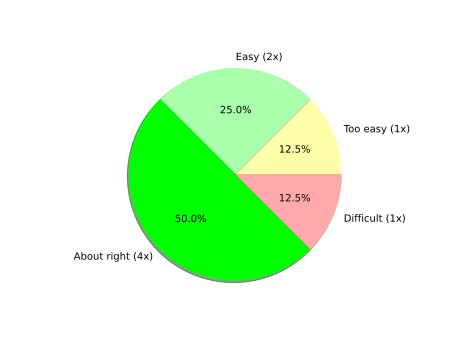Lab Session 3
Lab Session 3
In your opinion, how interesting/relevant was Lab Session 3?
Options: Very interesting, Interesting, Undecided, Irrelevant, Very irrelevant
Lab Session 3
How difficult was the task?
Options: Too easy, Easy, About right, Difficult, Too difficult
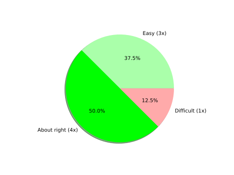Lab Session 4
Lab Session 4
In your opinion, how interesting/relevant was Lab Session 4?
Options: Very interesting, Interesting, Undecided, Irrelevant, Very irrelevant
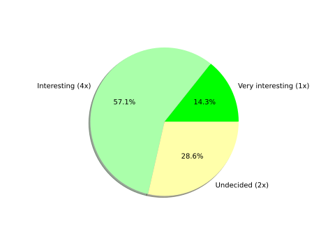Lab Session 4
How difficult was the task?
Options: Too easy, Easy, About right, Difficult, Too difficult

Bonus Tasks
Bonus Tasks
In your opinion, how interesting/relevant was the bonus task?
Options: Very interesting, Interesting, Undecided, Irrelevant, Very irrelevant
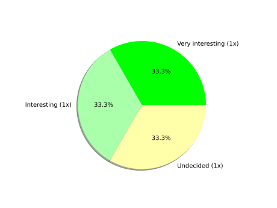Bonus Tasks
How difficult was the task? (Patch-based segmentation)
Options: Too easy, Easy, About right, Difficult, Too difficult
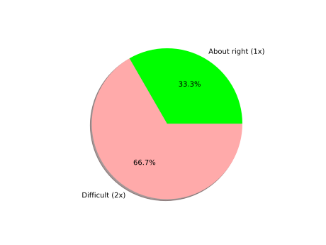Final Thoughts
Do you have any general criticism or suggestions regarding the organization or the content of the second week, or the course as a whole?
3 answer(s)
- Much better than the lecture and tutorials in the 3. Semester. Thanks for the help and support :))
- I liked it and the support was great!
- Thank you very much for the help during the lab sessions! I also found it really good that on both weeks we could do the tasks in our own pace. Maybe, after the discussed tasks, if you could upload a solution as well, to have an elegant solution to look at later, it would be great.